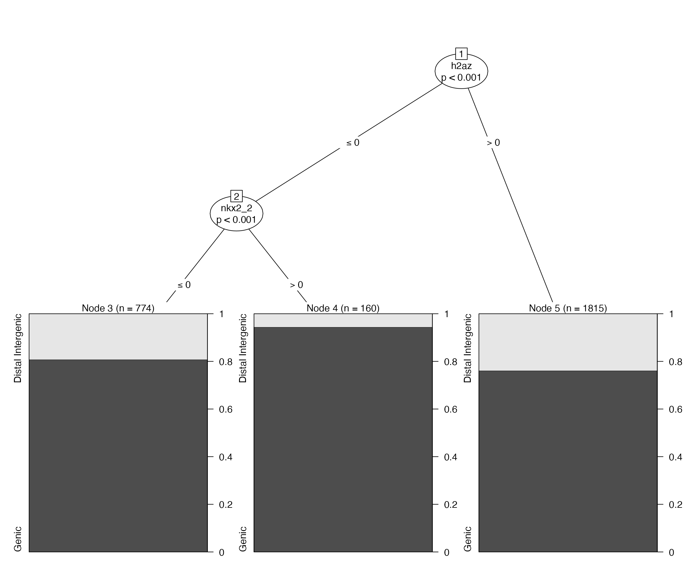
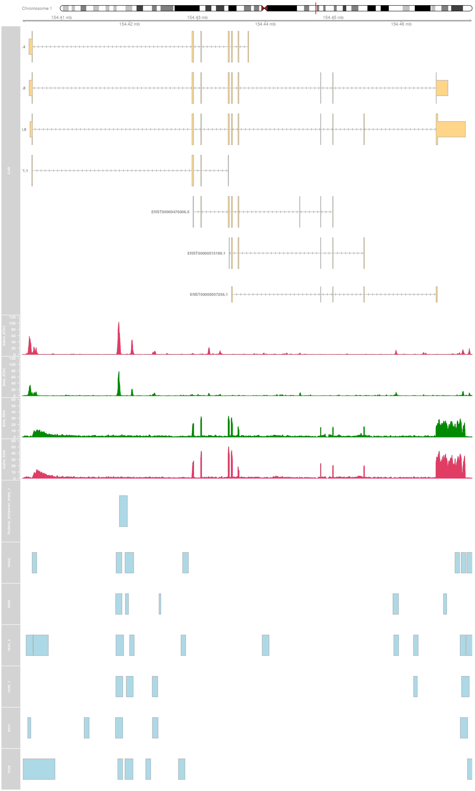
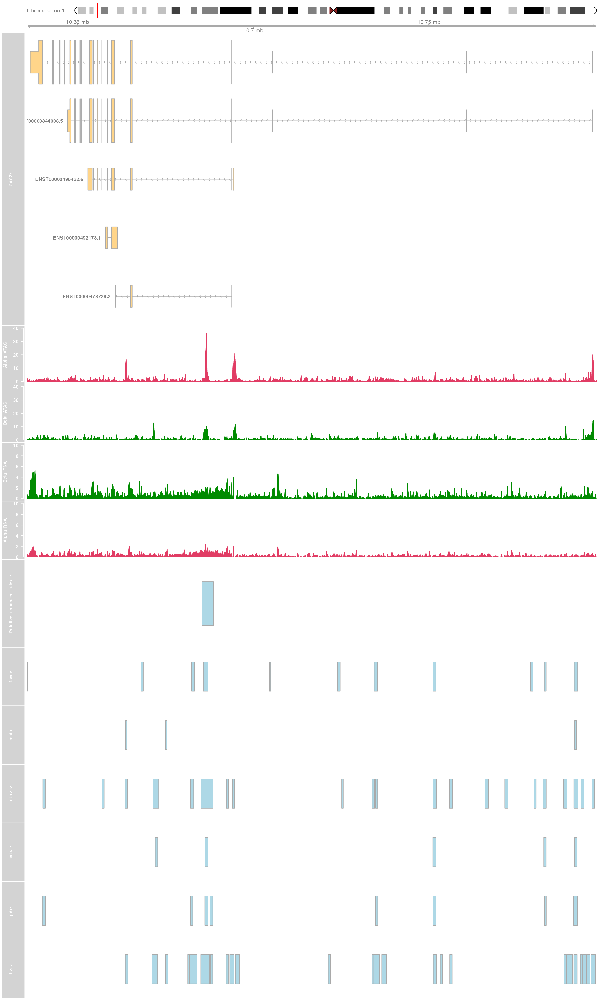
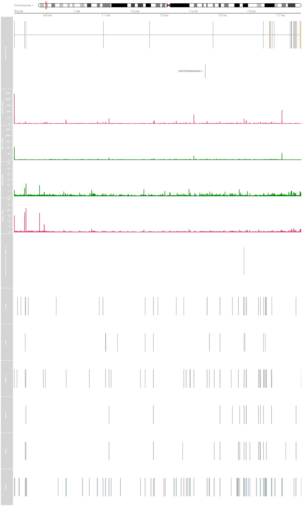
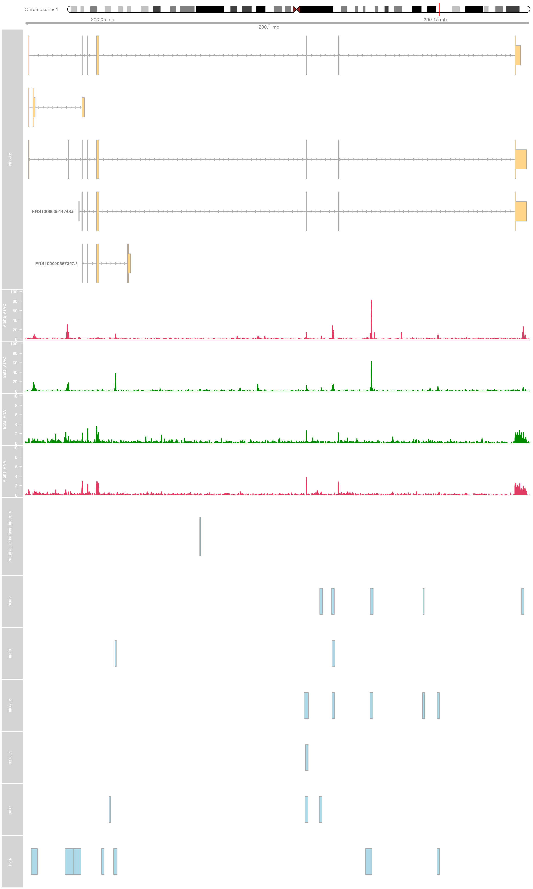
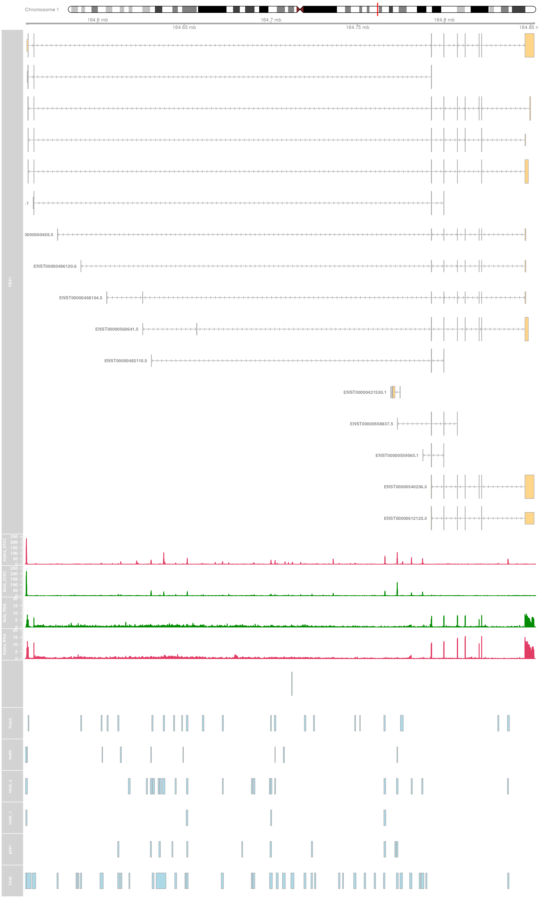
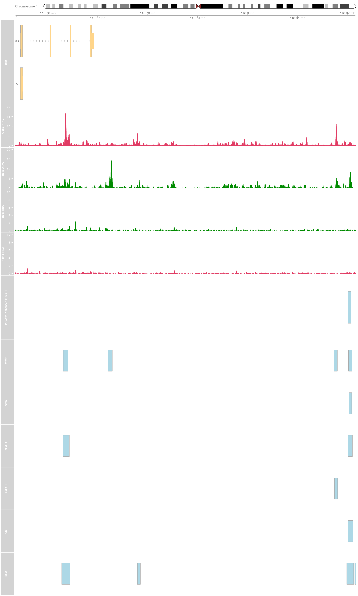

getting-started-with-epiRomics.RmdSummary epiRomics is an R package designed to integrate multi-omics data in order to identify and visualize enhancer regions alongside gene expression and other epigenomic modifications. Regulatory network analysis can be done using combinatory approaches to infer regions of significance such as enhancers, when combining ChIP and histone data. Downstream analysis can identify co-occurrence of these regions of interest with other user-supplied data, such as chromatin availability or gene expression. Finally, this package allows for results to be visualized at high resolution in a stand-alone browser.
Availability and Implementation epiRomics is released under Artistic-2.0 License. The source code and documents are freely available through Github (https://github.com/Huising-Lab/epiRomics).
Contact ammawl@ucdavis.edu or mhuising@ucdavis.edu
Supplementary information Supplementary data, and methods are available online on biorXiv or Github.
Competing Interest Statement
The authors have declared no competing interest.
If you use epiRomics in published research, please cite:
Mawla, AM& Huising, MO. epiRomics: a multi-omics R package to identify and visualize enhancers.
biorXiv 2021. doi:https://doi.org/10.1101/2021.08.19.456732
## loading packages
library(epiRomics)
#> epiRomics package loaded.
#> Automatic dependency check and verification of sample data presence
#> 'getOption("repos")' replaces Bioconductor standard repositories, see
#> '?repositories' for details
#>
#> replacement repositories:
#> CRAN: https://cloud.r-project.org
#> Bioconductor version 3.13 (BiocManager 1.30.16), R 4.1.1 (2021-08-10)
#> Old packages: 'rcmdcheck', 'lattice', 'mgcv', 'nlme', 'survival'
#> looking for data.table
#> looking for party
#> Loading required namespace: party
#> looking for plyr
#> Loading required namespace: plyr
#> looking for knitr
#> looking for rmarkdown
#> looking for igraph
#> Loading required namespace: igraph
#> looking for AnnotationDbi
#> Loading required namespace: AnnotationDbi
#> looking for annotatr
#> Loading required namespace: annotatr
#> Warning: replacing previous import 'AnnotationHub::hubUrl' by
#> 'rtracklayer::hubUrl' when loading 'annotatr'
#> looking for BiocGenerics
#> looking for GenomicFeatures
#> looking for GenomicRanges
#> looking for Gviz
#> Loading required namespace: Gviz
#> looking for IRanges
#> looking for rtracklayer
#> looking for enrichplot
#> Loading required namespace: enrichplot
#>
#> looking for ChIPseeker
#> Loading required namespace: ChIPseeker
#> looking for org.Hs.eg.db
#> Loading required namespace: org.Hs.eg.db
#>
#> looking for TxDb.Hsapiens.UCSC.hg38.knownGene
#> Loading required namespace: TxDb.Hsapiens.UCSC.hg38.knownGene
#> You are ready to go. For feedback, please email: ammawla@ucdavis.edu
library(TxDb.Hsapiens.UCSC.hg38.knownGene)
#> Loading required package: GenomicFeatures
#> Loading required package: BiocGenerics
#> Loading required package: parallel
#>
#> Attaching package: 'BiocGenerics'
#> The following objects are masked from 'package:parallel':
#>
#> clusterApply, clusterApplyLB, clusterCall, clusterEvalQ,
#> clusterExport, clusterMap, parApply, parCapply, parLapply,
#> parLapplyLB, parRapply, parSapply, parSapplyLB
#> The following objects are masked from 'package:stats':
#>
#> IQR, mad, sd, var, xtabs
#> The following objects are masked from 'package:base':
#>
#> anyDuplicated, append, as.data.frame, basename, cbind, colnames,
#> dirname, do.call, duplicated, eval, evalq, Filter, Find, get, grep,
#> grepl, intersect, is.unsorted, lapply, Map, mapply, match, mget,
#> order, paste, pmax, pmax.int, pmin, pmin.int, Position, rank,
#> rbind, Reduce, rownames, sapply, setdiff, sort, table, tapply,
#> union, unique, unsplit, which.max, which.min
#> Loading required package: S4Vectors
#> Loading required package: stats4
#>
#> Attaching package: 'S4Vectors'
#> The following objects are masked from 'package:base':
#>
#> expand.grid, I, unname
#> Loading required package: IRanges
#> Loading required package: GenomeInfoDb
#> Loading required package: GenomicRanges
#> Loading required package: AnnotationDbi
#> Loading required package: Biobase
#> Welcome to Bioconductor
#>
#> Vignettes contain introductory material; view with
#> 'browseVignettes()'. To cite Bioconductor, see
#> 'citation("Biobase")', and for packages 'citation("pkgname")'.
library(org.Hs.eg.db)This package includes some example data to get you started, delineating human pancreatic islet enhancers between alpha and beta cells.
Human pancreatic islet alpha and beta ATAC- and companion RNA- Seq data were retrieved from GEO accession GSE76268 (Ackermann, et al., 2016).
ATAC samples were processed using the ENCODE-DCC ATAC sequencing pipeline, aligning to the hg38 (Harrow, et al., 2012) build of the human genome (Consortium, 2012; Davis, et al., 2018).
Peak calls generated through the pipeline using MACS2 (Zhang, et al., 2008) were analyzed downstream through the BioConductor package DiffBind (Ross-Innes, et al., 2012) in order to identify differentially enriched chromatin regions between the two cell types.
RNA samples were quality controlled using the tool fastp (Chen, et al., 2018), and aligned using STAR (Dobin, et al., 2013) to the hg38 build of the human genome. Wiggle files produced by the STAR aligner were then merged by cell type using UCSC command line tools.
Bigwigs merged by cell type were subsetted to chromosome 1 using UCSC command line tools (Kent, et al., 2010).
ChIP-sequencing peak calls generated using MACS2 for human pancreatic islet transcription factors Foxa2, MafB, Nkx2.2, Nkx6.1, and Pdx1 were retrieved from the EMBL-EBI repository database E-MTAB-1919 (Pasquali, et al., 2014). All peak calls were lifted over to the hg38 genome build using the UCSC genome browser liftOver tool (Kent, et al., 2002).
Histone-sequencing peak calls generated using MACS2 for histones H3k27ac and H3k4me1 were retrieved from GEO accession GSE16256 (Bernstein, et al., 2010), and for histone H2A.Z from the EMBL-EBI repository database E-MTAB-1919 (Pasquali, et al., 2014). All peak calls were lifted over to the hg38 genome build using the UCSC genome browser liftOver tool.
The FANTOM5 human enhancer database (Lizio, et al., 2015) was retrieved, and all regions were lifted over to the hg38 genome build using the UCSC genome browser liftOver tool.
Human ultra-conserved non-coding elements (UCNEs) were retrieved form the UCNE database (Dimitrieva and Bucher, 2012), and all regions were lifted over to the hg38 genome build using the UCSC genome browser liftOver tool.
The human islet regulome database was retrieved (Miguel-Escalada, et al., 2019) and all regions were lifted over to the hg38 genome build using the UCSC genome browser liftOver tool.
Lets load and take a look at how to properly format the datasets epiRomics uses to build the initial database.
## Required columns are: name, path, genome, format, and type
## The genome must also be in proper format, e.g. mm10 or hg38
## Type of data can be histone, methyl, SNP, or ChIP. ChIP is
## required for some downstream functions to work appropriately.
example_epiRomics_Db_sheet <- read.csv(file = system.file("extdata", "example_epiRomics_Db_sheet_user_paths.csv",
package = "epiRomics"))
head(example_epiRomics_Db_sheet)
#> name
#> 1 h3k27ac
#> 2 h3k4me1
#> 3 foxa2
#> 4 mafb
#> 5 nkx2_2
#> 6 nxk6_1
#> path
#> 1 /Users/runner/work/_temp/Library/epiRomics/extdata/Histone/H3k27ac_hg38.bed
#> 2 /Users/runner/work/_temp/Library/epiRomics/extdata/Histone/H3K4me1_hg38.bed
#> 3 /Users/runner/work/_temp/Library/epiRomics/extdata/ChIP/FOXA2_hg38.bed
#> 4 /Users/runner/work/_temp/Library/epiRomics/extdata/ChIP/MAFB_hg38.bed
#> 5 /Users/runner/work/_temp/Library/epiRomics/extdata/ChIP/NKX2_2_hg38.bed
#> 6 /Users/runner/work/_temp/Library/epiRomics/extdata/ChIP/NKX6_1_hg38.bed
#> genome format type
#> 1 hg38 bed histone
#> 2 hg38 bed histone
#> 3 hg38 bed chip
#> 4 hg38 bed chip
#> 5 hg38 bed chip
#> 6 hg38 bed chip
## epiRomics_build_dB constructs a database of class epiRomics with this data sheet
epiRomics_dB <- epiRomics_build_dB(epiRomics_db_file = system.file("extdata", "example_epiRomics_Db_sheet_user_paths.csv",
package = "epiRomics"), txdb_organism = "TxDb.Hsapiens.UCSC.hg38.knownGene::TxDb.Hsapiens.UCSC.hg38.knownGene",
epiRomics_genome = "hg38", epiRomics_organism = "org.Hs.eg.db")
#> 'getOption("repos")' replaces Bioconductor standard repositories, see
#> '?repositories' for details
#>
#> replacement repositories:
#> CRAN: https://cloud.r-project.org
#>
#> 'getOption("repos")' replaces Bioconductor standard repositories, see
#> '?repositories' for details
#>
#> replacement repositories:
#> CRAN: https://cloud.r-project.org
#>
#> 'getOption("repos")' replaces Bioconductor standard repositories, see
#> '?repositories' for details
#>
#> replacement repositories:
#> CRAN: https://cloud.r-project.org
#>
#> 'getOption("repos")' replaces Bioconductor standard repositories, see
#> '?repositories' for details
#>
#> replacement repositories:
#> CRAN: https://cloud.r-project.org
#>
#> 'getOption("repos")' replaces Bioconductor standard repositories, see
#> '?repositories' for details
#>
#> replacement repositories:
#> CRAN: https://cloud.r-project.org
#>
#> 'getOption("repos")' replaces Bioconductor standard repositories, see
#> '?repositories' for details
#>
#> replacement repositories:
#> CRAN: https://cloud.r-project.org
#>
#> 'getOption("repos")' replaces Bioconductor standard repositories, see
#> '?repositories' for details
#>
#> replacement repositories:
#> CRAN: https://cloud.r-project.org
#>
#> 'getOption("repos")' replaces Bioconductor standard repositories, see
#> '?repositories' for details
#>
#> replacement repositories:
#> CRAN: https://cloud.r-project.org
#>
#> 'getOption("repos")' replaces Bioconductor standard repositories, see
#> '?repositories' for details
#>
#> replacement repositories:
#> CRAN: https://cloud.r-project.org
#>
#> 'getOption("repos")' replaces Bioconductor standard repositories, see
#> '?repositories' for details
#>
#> replacement repositories:
#> CRAN: https://cloud.r-project.org
#>
#> 'getOption("repos")' replaces Bioconductor standard repositories, see
#> '?repositories' for details
#>
#> replacement repositories:
#> CRAN: https://cloud.r-project.org
#>
#> 'getOption("repos")' replaces Bioconductor standard repositories, see
#> '?repositories' for details
#>
#> replacement repositories:
#> CRAN: https://cloud.r-project.org
#> Building enhancers...
#> snapshotDate(): 2021-05-18
#> downloading 1 resources
#> retrieving 1 resource
#> loading from cache
#> require("rtracklayer")
#> 'getOption("repos")' replaces Bioconductor standard repositories, see
#> '?repositories' for details
#>
#> replacement repositories:
#> CRAN: https://cloud.r-project.org
#> 'select()' returned 1:1 mapping between keys and columns
#> Building promoters...
#> Building 1to5kb upstream of TSS...
#> Building intergenic...
#> Building cds...
#> Building 5UTRs...
#> Building 3UTRs...
#> Building exons...
#> Building first exons...
#> Building introns...
#> Building intron exon boundaries...
#> Building exon intron boundaries...
#> Building CpG islands...
#> Building CpG shores...
#> Building CpG shelves...
#> Building inter-CpG-islands...
#> snapshotDate(): 2021-05-18
#> Building lncRNA transcripts...
#> downloading 1 resources
#> retrieving 1 resource
#> loading from cache
## Identifying active, putative enhancers
# 3 There is a lot of flexibility for data exploration here. In this
# example, we search for putative enhancers using two histone marks
# known to co-occur at enhancer regions - h3k4me1 & h3k27ac
epiRomics_putative_enhancers <- epiRomics_enhancers(epiRomics_dB, epiRomics_histone_mark_1 = "h3k4me1",
epiRomics_histone_mark_2 = "h3k27ac")
## Taking a look, we see a list of 19,692 putative enhancers demarked
## by H3k4me1 & H3k27ac
epiRomics_putative_enhancers@annotations
#> GRanges object with 19692 ranges and 0 metadata columns:
#> seqnames ranges strand
#> <Rle> <IRanges> <Rle>
#> [1] chr1 999886-1000011 *
#> [2] chr1 1000228-1000811 *
#> [3] chr1 1000850-1001468 *
#> [4] chr1 1005007-1006023 *
#> [5] chr1 1013701-1013893 *
#> ... ... ... ...
#> [19688] chrY 12392544-12392994 *
#> [19689] chrY 13282680-13282760 *
#> [19690] chrY 15455449-15455788 *
#> [19691] chrY 19066496-19066508 *
#> [19692] chrY 19075542-19075899 *
#> -------
#> seqinfo: 595 sequences (1 circular) from hg38 genome
## Now we have a list of regions as possible candidates for
## enhancers, but where do we go from here? One way to increase
## confidence of these calls is to cross this list against an
## enhancer database, for instance, FANTOM.
## NOTE: This option may not be available for all organisms.
epiRomics_putative_enhancers_filtered_fantom <- epiRomics_enhancers_filter(epiRomics_putative_enhancers,
epiRomics_dB, epiRomics_type = "hg38_custom_fantom")
## Taking a look, we see a reduced number of 2,749 candidate regions
epiRomics_putative_enhancers_filtered_fantom@annotations
#> GRanges object with 2749 ranges and 0 metadata columns:
#> seqnames ranges strand
#> <Rle> <IRanges> <Rle>
#> [1] chr1 1021242-1021277 *
#> [2] chr1 1021318-1021698 *
#> [3] chr1 1079632-1080061 *
#> [4] chr1 1080101-1080628 *
#> [5] chr1 1128200-1128445 *
#> ... ... ... ...
#> [2745] chrX 154369950-154370183 *
#> [2746] chrX 154371971-154372237 *
#> [2747] chrX 154372350-154372695 *
#> [2748] chrX 154517139-154517596 *
#> [2749] chrX 154734550-154734738 *
#> -------
#> seqinfo: 595 sequences (1 circular) from hg38 genome
## We can also filter putative enhancer calls against active
## enhancers from the human islet regulome database
epiRomics_putative_enhancers_filtered_regulome_active <- epiRomics_enhancers_filter(epiRomics_putative_enhancers,
epiRomics_dB, epiRomics_type = "hg38_custom_regulome_active")
epiRomics_putative_enhancers_filtered_regulome_active@annotations
#> GRanges object with 6025 ranges and 0 metadata columns:
#> seqnames ranges strand
#> <Rle> <IRanges> <Rle>
#> [1] chr1 1068896-1068951 *
#> [2] chr1 1069171-1069333 *
#> [3] chr1 1079632-1080061 *
#> [4] chr1 1080101-1080628 *
#> [5] chr1 1158358-1158930 *
#> ... ... ... ...
#> [6021] chrX 153381411-153381523 *
#> [6022] chrX 153381677-153381956 *
#> [6023] chrX 153382322-153382448 *
#> [6024] chrX 153985442-153985689 *
#> [6025] chrX 154091801-154091996 *
#> -------
#> seqinfo: 595 sequences (1 circular) from hg38 genome
## We can also filter putative enhancer calls against super enhancers
## from human islet regulome database
epiRomics_putative_enhancers_filtered_regulome_super <- epiRomics_enhancers_filter(epiRomics_putative_enhancers,
epiRomics_dB, epiRomics_type = "hg38_custom_regulome_super")
epiRomics_putative_enhancers_filtered_regulome_super@annotations
#> GRanges object with 2401 ranges and 0 metadata columns:
#> seqnames ranges strand
#> <Rle> <IRanges> <Rle>
#> [1] chr1 7574092-7574479 *
#> [2] chr1 7574640-7575094 *
#> [3] chr1 8169274-8169689 *
#> [4] chr1 8170112-8170857 *
#> [5] chr1 8174089-8174358 *
#> ... ... ... ...
#> [2397] chr22 46109916-46110442 *
#> [2398] chr22 46115774-46116154 *
#> [2399] chr22 46116326-46116501 *
#> [2400] chrX 39813348-39813627 *
#> [2401] chrX 39814304-39814607 *
#> -------
#> seqinfo: 595 sequences (1 circular) from hg38 genome
## We can also filter putative enhancer calls against Ultra-Conserved
## Non-Coding Elements
epiRomics_putative_enhancers_filtered_ucnes <- epiRomics_enhancers_filter(epiRomics_putative_enhancers,
epiRomics_dB, epiRomics_type = "hg38_custom_ucnes")
epiRomics_putative_enhancers_filtered_ucnes@annotations
#> GRanges object with 11 ranges and 0 metadata columns:
#> seqnames ranges strand
#> <Rle> <IRanges> <Rle>
#> [1] chr1 164635220-164635921 *
#> [2] chr1 164711914-164712296 *
#> [3] chr1 164712350-164713071 *
#> [4] chr1 200079185-200079426 *
#> [5] chr1 213585694-213586385 *
#> [6] chr3 71131859-71132164 *
#> [7] chr9 106921420-106921764 *
#> [8] chr11 114163425-114164860 *
#> [9] chr15 36903894-36904085 *
#> [10] chr15 53447393-53447809 *
#> [11] chr21 16534340-16534665 *
#> -------
#> seqinfo: 595 sequences (1 circular) from hg38 genomeBiology has established that enhancers can be quite redundant, and not all play an active role in regulating a cell’s activity. How can we utilize other epigenomic data in order to identify true enhanceosome regions? One way is to cross this list against all ChIP data of the cell type. A true enhanceosome region should have made it through our filtering thus far, and contain several binding sites for known TFs. Co-binding is expected, and the list is sorted by the highest number of ChIP hits within the region.
epiRomics_putative_enhanceosome_fantom <- epiRomics_enhanceosome(epiRomics_putative_enhancers_filtered_fantom,
epiRomics_dB)
#> >> preparing features information... 2021-10-07 22:00:11
#> >> identifying nearest features... 2021-10-07 22:00:12
#> >> calculating distance from peak to TSS... 2021-10-07 22:00:13
#> >> assigning genomic annotation... 2021-10-07 22:00:13
#> >> adding gene annotation... 2021-10-07 22:00:44
#> 'select()' returned 1:many mapping between keys and columns
#> >> assigning chromosome lengths 2021-10-07 22:00:44
#> >> done... 2021-10-07 22:00:44
## Taking a look, we see the top candidates meet the criteria we list
## as expected
epiRomics_putative_enhanceosome_fantom@annotations
#> GRanges object with 2749 ranges and 19 metadata columns:
#> seqnames ranges strand | foxa2 mafb nkx2_2
#> <Rle> <IRanges> <Rle> | <integer> <integer> <integer>
#> 183 chr1 154418514-154419684 * | 2 2 1
#> 1096 chr9 2242369-2242873 * | 2 1 1
#> 2615 chr22 30310745-30311570 * | 2 1 2
#> 34 chr1 10685395-10688670 * | 1 0 1
#> 792 chr6 30748438-30749427 * | 2 1 1
#> ... ... ... ... . ... ... ...
#> 2743 chrX 153927339-153927701 * | 0 0 0
#> 2745 chrX 154369950-154370183 * | 0 0 0
#> 2746 chrX 154371971-154372237 * | 0 0 0
#> 2747 chrX 154372350-154372695 * | 0 0 0
#> 2748 chrX 154517139-154517596 * | 0 0 0
#> nxk6_1 pdx1 h2az ChIP_Hits annotation geneChr
#> <integer> <integer> <integer> <numeric> <character> <integer>
#> 183 2 1 2 10 Intron (ENST00000622.. 1
#> 1096 1 2 1 8 Distal Intergenic 9
#> 2615 1 1 1 8 Promoter (2-3kb) 22
#> 34 1 2 2 7 Intron (ENST00000377.. 1
#> 792 1 1 1 7 Intron (ENST00000656.. 6
#> ... ... ... ... ... ... ...
#> 2743 0 0 0 0 Promoter (<=1kb) 23
#> 2745 0 0 0 0 Promoter (1-2kb) 23
#> 2746 0 0 0 0 Promoter (<=1kb) 23
#> 2747 0 0 0 0 Promoter (1-2kb) 23
#> 2748 0 0 0 0 Promoter (<=1kb) 23
#> geneStart geneEnd geneLength geneStrand geneId transcriptId
#> <integer> <integer> <integer> <integer> <character> <character>
#> 183 154429343 154449979 20637 1 3570 ENST00000476006.5
#> 1096 2181571 2186183 4613 1 6595 ENST00000635392.1
#> 2615 30292008 30307890 15883 2 83874 ENST00000403362.5
#> 34 10660737 10693912 33176 2 54897 ENST00000478728.2
#> 792 30743199 30744547 1349 2 8870 ENST00000259874.6
#> ... ... ... ... ... ... ...
#> 2743 153920715 153926860 6146 2 393 ENST00000422091.1
#> 2745 154348524 154371203 22680 2 2316 ENST00000420627.5
#> 2746 154348529 154371283 22755 2 2316 ENST00000422373.6
#> 2747 154348529 154371283 22755 2 2316 ENST00000422373.6
#> 2748 154506204 154516242 10039 2 60343 ENST00000434658.6
#> distanceToTSS ENSEMBL SYMBOL GENENAME
#> <numeric> <character> <character> <character>
#> 183 -9659 ENSG00000160712 IL6R interleukin 6 receptor
#> 1096 60798 ENSG00000080503 SMARCA2 SWI/SNF related, mat..
#> 2615 -2855 ENSG00000099992 TBC1D10A TBC1 domain family m..
#> 34 5242 ENSG00000130940 CASZ1 castor zinc finger 1
#> 792 -3891 ENSG00000137331 IER3 immediate early resp..
#> ... ... ... ... ...
#> 2743 -479 ENSG00000089820 ARHGAP4 Rho GTPase activatin..
#> 2745 1020 ENSG00000196924 FLNA filamin A
#> 2746 -688 ENSG00000196924 FLNA filamin A
#> 2747 -1067 ENSG00000196924 FLNA filamin A
#> 2748 -897 ENSG00000071889 FAM3A FAM3 metabolism regu..
#> -------
#> seqinfo: 595 sequences (1 circular) from hg38 genome
## Evaluate calls on chromosome 1
head(as.data.frame(epiRomics_putative_enhanceosome_fantom@annotations)[as.data.frame(epiRomics_putative_enhanceosome_fantom@annotations)$seqnames ==
"chr1", ])
#> seqnames start end width strand foxa2 mafb nkx2_2 nxk6_1 pdx1
#> 183 chr1 154418514 154419684 1171 * 2 2 1 2 1
#> 34 chr1 10685395 10688670 3276 * 1 0 1 1 2
#> 24 chr1 8170112 8170857 746 * 1 1 1 1 1
#> 67 chr1 21638834 21639978 1145 * 1 1 1 1 1
#> 71 chr1 22414515 22414806 292 * 1 1 1 1 1
#> 256 chr1 205318810 205319660 851 * 1 1 2 1 0
#> h2az ChIP_Hits annotation geneChr
#> 183 2 10 Intron (ENST00000622330.4/3570, intron 1 of 6) 1
#> 34 2 7 Intron (ENST00000377022.8/54897, intron 4 of 20) 1
#> 24 1 6 Distal Intergenic 1
#> 67 1 6 Intron (ENST00000290101.8/5909, intron 2 of 26) 1
#> 71 1 6 Distal Intergenic 1
#> 256 1 6 Promoter (2-3kb) 1
#> geneStart geneEnd geneLength geneStrand geneId transcriptId
#> 183 154429343 154449979 20637 1 3570 ENST00000476006.5
#> 34 10660737 10693912 33176 2 54897 ENST00000478728.2
#> 24 8201518 8215207 13690 1 102724539 ENST00000670361.1
#> 67 21596221 21651820 55600 2 5909 ENST00000471600.6
#> 71 22428838 22511763 82926 1 9923 ENST00000650433.1
#> 256 205302063 205321745 19683 2 81788 ENST00000367157.6
#> distanceToTSS ENSEMBL SYMBOL
#> 183 -9659 ENSG00000160712 IL6R
#> 34 5242 ENSG00000130940 CASZ1
#> 24 -30661 ENSG00000227634 LINC01714
#> 67 11842 ENSG00000076864 RAP1GAP
#> 71 -14032 ENSG00000184677 ZBTB40
#> 256 2085 ENSG00000163545 NUAK2
#> GENENAME
#> 183 interleukin 6 receptor
#> 34 castor zinc finger 1
#> 24 long intergenic non-protein coding RNA 1714
#> 67 RAP1 GTPase activating protein
#> 71 zinc finger and BTB domain containing 40
#> 256 NUAK family kinase 2
## Find Index
which(names(epiRomics_putative_enhanceosome_fantom@annotations) == 183)
#> [1] 1ChIP dataset repositories are quite sizeable for many organisms and cell types, with the expectation to only grow larger. Many different TFs binding to a putative enhancer region may not be that meaningful in the context of your biological question. A further step would be to ask whether there are co-TFs that pop up together, and whether this pattern varies across the functional annotation of the genome, i.e. does the combination of two TFs on enhanceosomes change on the gene body compared to distal intergenic regions?
plot(epiRomics_predictors(epiRomics_putative_enhanceosome_fantom))
What if you wanted to visualize co-binding on your FANTOM filtered putative enhancer region? And do you have additional data you want to include for visualization, such as ATAC and RNA Seq? Lets take a look at one of the top hits
## Read in ATAC Seq and RNA Seq track bigwigs
## NOTE: These bigwigs are subsetted to chromosome 1. Indices not
## falling on chromosome 1 will return an error.
epiRomics_track_connection <- read.csv(system.file("extdata", "example_epiRomics_BW_sheet_user_paths.csv",
package = "epiRomics"))
epiRomics_track_layer_human(
epiRomics_putative_enhanceosome_fantom,
epiRomics_index = which(
names(epiRomics_putative_enhanceosome_fantom@annotations) == 183
),
epiRomics_dB = epiRomics_dB,
epiRomics_track_connection = epiRomics_track_connection
)
#> [1] "not empty"
#> [1] 103.678
#> [1] "not empty"
#> [1] 77.5726
#> [1] "not empty"
#> [1] 33.2945
#> [1] "not empty"
#> [1] 50.4959
## What about a region that overlapped with active enhancers from the
## human islet regulome database?
epiRomics_putative_enhanceosome_regulome_active <- epiRomics_enhanceosome(epiRomics_putative_enhancers_filtered_regulome_active,
epiRomics_dB)
#> >> preparing features information... 2021-10-07 22:02:23
#> >> identifying nearest features... 2021-10-07 22:02:23
#> >> calculating distance from peak to TSS... 2021-10-07 22:02:24
#> >> assigning genomic annotation... 2021-10-07 22:02:24
#> >> adding gene annotation... 2021-10-07 22:02:29
#> 'select()' returned 1:many mapping between keys and columns
#> >> assigning chromosome lengths 2021-10-07 22:02:29
#> >> done... 2021-10-07 22:02:29
epiRomics_putative_enhanceosome_regulome_active@annotations
#> GRanges object with 6025 ranges and 19 metadata columns:
#> seqnames ranges strand | foxa2 mafb nkx2_2
#> <Rle> <IRanges> <Rle> | <integer> <integer> <integer>
#> 456 chr1 154418514-154419684 * | 2 2 1
#> 2082 chr7 1555599-1556082 * | 1 1 1
#> 2572 chr9 2242369-2242873 * | 2 1 1
#> 3421 chr11 65416576-65419753 * | 1 1 2
#> 4709 chr17 7887867-7889135 * | 1 0 2
#> ... ... ... ... . ... ... ...
#> 5999 chrX 49184194 * | 0 0 0
#> 6001 chrX 70478965-70479351 * | 0 0 0
#> 6006 chrX 107710676-107711066 * | 0 0 0
#> 6007 chrX 107711430-107711673 * | 0 0 0
#> 6020 chrX 150874055-150874330 * | 0 0 0
#> nxk6_1 pdx1 h2az ChIP_Hits annotation geneChr
#> <integer> <integer> <integer> <numeric> <character> <integer>
#> 456 2 1 2 10 Intron (ENST00000622.. 1
#> 2082 2 2 1 8 Promoter (<=1kb) 7
#> 2572 1 2 1 8 Distal Intergenic 9
#> 3421 1 1 2 8 Distal Intergenic 11
#> 4709 2 2 1 8 Promoter (<=1kb) 17
#> ... ... ... ... ... ... ...
#> 5999 0 0 0 0 Promoter (<=1kb) 23
#> 6001 0 0 0 0 Promoter (<=1kb) 23
#> 6006 0 0 0 0 Distal Intergenic 23
#> 6007 0 0 0 0 Distal Intergenic 23
#> 6020 0 0 0 0 Intron (ENST00000370.. 23
#> geneStart geneEnd geneLength geneStrand geneId transcriptId
#> <integer> <integer> <integer> <integer> <character> <character>
#> 456 154429343 154449979 20637 1 3570 ENST00000476006.5
#> 2082 1550305 1556120 5816 2 202915 ENST00000441933.5
#> 2572 2181571 2186183 4613 1 6595 ENST00000635392.1
#> 3421 65422798 65445540 22743 1 283131 ENST00000501122.2
#> 4709 7888789 7912755 23967 1 1107 ENST00000330494.12
#> ... ... ... ... ... ... ...
#> 5999 49175621 49184789 9169 2 4007 ENST00000453382.5
#> 6001 70479118 70499903 20786 1 1741 ENST00000466140.5
#> 6006 107714677 107716401 1725 2 1831 ENST00000486554.1
#> 6007 107714677 107716401 1725 2 1831 ENST00000486554.1
#> 6020 150814900 150898609 83710 2 83692 ENST00000491877.1
#> distanceToTSS ENSEMBL SYMBOL GENENAME
#> <numeric> <character> <character> <character>
#> 456 -9659 ENSG00000160712 IL6R interleukin 6 receptor
#> 2082 38 ENSG00000164855 TMEM184A transmembrane protei..
#> 2572 60798 ENSG00000080503 SMARCA2 SWI/SNF related, mat..
#> 3421 -3045 ENSG00000245532 NEAT1 nuclear paraspeckle ..
#> 4709 0 ENSG00000170004 CHD3 chromodomain helicas..
#> ... ... ... ... ...
#> 5999 595 ENSG00000012211 PRICKLE3 prickle planar cell ..
#> 6001 0 ENSG00000082458 DLG3 discs large MAGUK sc..
#> 6006 5335 ENSG00000157514 TSC22D3 TSC22 domain family ..
#> 6007 4728 ENSG00000157514 TSC22D3 TSC22 domain family ..
#> 6020 24279 ENSG00000102181 CD99L2 CD99 molecule like 2
#> -------
#> seqinfo: 595 sequences (1 circular) from hg38 genome
## Evaluate calls on chromosome 1
head(as.data.frame(epiRomics_putative_enhanceosome_regulome_active@annotations)[as.data.frame(epiRomics_putative_enhanceosome_regulome_active@annotations)$seqnames ==
"chr1", ])
#> seqnames start end width strand foxa2 mafb nkx2_2 nxk6_1 pdx1
#> 456 chr1 154418514 154419684 1171 * 2 2 1 2 1
#> 82 chr1 10685395 10688670 3276 * 1 0 1 1 2
#> 46 chr1 7574092 7574479 388 * 1 1 1 1 1
#> 47 chr1 7574640 7575094 455 * 1 1 1 1 1
#> 49 chr1 8169274 8169689 416 * 1 1 1 1 1
#> 50 chr1 8170112 8170857 746 * 1 1 1 1 1
#> h2az ChIP_Hits annotation geneChr
#> 456 2 10 Intron (ENST00000622330.4/3570, intron 1 of 6) 1
#> 82 2 7 Intron (ENST00000377022.8/54897, intron 4 of 20) 1
#> 46 1 6 Intron (ENST00000303635.12/23261, intron 6 of 22) 1
#> 47 1 6 Intron (ENST00000303635.12/23261, intron 6 of 22) 1
#> 49 1 6 Distal Intergenic 1
#> 50 1 6 Distal Intergenic 1
#> geneStart geneEnd geneLength geneStrand geneId transcriptId
#> 456 154429343 154449979 20637 1 3570 ENST00000476006.5
#> 82 10660737 10693912 33176 2 54897 ENST00000478728.2
#> 46 7736408 7767856 31449 1 23261 ENST00000495233.5
#> 47 7736408 7767856 31449 1 23261 ENST00000495233.5
#> 49 8201518 8215207 13690 1 102724539 ENST00000670361.1
#> 50 8201518 8215207 13690 1 102724539 ENST00000670361.1
#> distanceToTSS ENSEMBL SYMBOL
#> 456 -9659 ENSG00000160712 IL6R
#> 82 5242 ENSG00000130940 CASZ1
#> 46 -161929 ENSG00000171735 CAMTA1
#> 47 -161314 ENSG00000171735 CAMTA1
#> 49 -31829 ENSG00000227634 LINC01714
#> 50 -30661 ENSG00000227634 LINC01714
#> GENENAME
#> 456 interleukin 6 receptor
#> 82 castor zinc finger 1
#> 46 calmodulin binding transcription activator 1
#> 47 calmodulin binding transcription activator 1
#> 49 long intergenic non-protein coding RNA 1714
#> 50 long intergenic non-protein coding RNA 1714
## Find Index
which(names(epiRomics_putative_enhanceosome_regulome_active@annotations) ==
82)
#> [1] 7
epiRomics_track_layer_human(
epiRomics_putative_enhanceosome_regulome_active,
epiRomics_index = which(
names(
epiRomics_putative_enhanceosome_regulome_active@annotations
) == 82
),
epiRomics_dB = epiRomics_dB,
epiRomics_track_connection = epiRomics_track_connection
)
#> [1] "not empty"
#> [1] 36.1883
#> [1] "not empty"
#> [1] 14.7321
#> [1] "not empty"
#> [1] 5.30505
#> [1] "not empty"
#> [1] 2.40628
## What about a region that overlapped with super enhancers from the
## human islet regulome database?
epiRomics_putative_enhanceosome_regulome_super <- epiRomics_enhanceosome(epiRomics_putative_enhancers_filtered_regulome_super,
epiRomics_dB)
#> >> preparing features information... 2021-10-07 22:03:49
#> >> identifying nearest features... 2021-10-07 22:03:49
#> >> calculating distance from peak to TSS... 2021-10-07 22:03:50
#> >> assigning genomic annotation... 2021-10-07 22:03:50
#> >> adding gene annotation... 2021-10-07 22:03:55
#> 'select()' returned 1:many mapping between keys and columns
#> >> assigning chromosome lengths 2021-10-07 22:03:55
#> >> done... 2021-10-07 22:03:55
epiRomics_putative_enhanceosome_regulome_super@annotations
#> GRanges object with 2401 ranges and 19 metadata columns:
#> seqnames ranges strand | foxa2 mafb nkx2_2
#> <Rle> <IRanges> <Rle> | <integer> <integer> <integer>
#> 166 chr1 154418514-154419684 * | 2 2 1
#> 966 chr9 2242369-2242873 * | 2 1 1
#> 1422 chr11 65416576-65419753 * | 1 1 2
#> 16 chr1 10685395-10688670 * | 1 0 1
#> 764 chr6 30748438-30749427 * | 2 1 1
#> ... ... ... ... . ... ... ...
#> 2393 chr22 46103687-46105878 * | 0 0 0
#> 2396 chr22 46108912-46109315 * | 0 0 0
#> 2397 chr22 46109916-46110442 * | 0 0 0
#> 2398 chr22 46115774-46116154 * | 0 0 0
#> 2399 chr22 46116326-46116501 * | 0 0 0
#> nxk6_1 pdx1 h2az ChIP_Hits annotation geneChr
#> <integer> <integer> <integer> <numeric> <character> <integer>
#> 166 2 1 2 10 Intron (ENST00000622.. 1
#> 966 1 2 1 8 Distal Intergenic 9
#> 1422 1 1 2 8 Distal Intergenic 11
#> 16 1 2 2 7 Intron (ENST00000377.. 1
#> 764 1 1 1 7 Intron (ENST00000656.. 6
#> ... ... ... ... ... ... ...
#> 2393 0 0 0 0 Exon (ENST0000038105.. 22
#> 2396 0 0 0 0 Exon (ENST0000043543.. 22
#> 2397 0 0 0 0 Promoter (2-3kb) 22
#> 2398 0 0 0 0 Promoter (2-3kb) 22
#> 2399 0 0 0 0 Promoter (2-3kb) 22
#> geneStart geneEnd geneLength geneStrand geneId transcriptId
#> <integer> <integer> <integer> <integer> <character> <character>
#> 166 154429343 154449979 20637 1 3570 ENST00000476006.5
#> 966 2181571 2186183 4613 1 6595 ENST00000635392.1
#> 1422 65422798 65445540 22743 1 283131 ENST00000501122.2
#> 16 10660737 10693912 33176 2 54897 ENST00000478728.2
#> 764 30743199 30744547 1349 2 8870 ENST00000259874.6
#> ... ... ... ... ... ... ...
#> 2393 46112749 46112822 74 1 406883 ENST00000362116.3
#> 2396 46112749 46112822 74 1 406883 ENST00000362116.3
#> 2397 46112749 46112822 74 1 406883 ENST00000362116.3
#> 2398 46113686 46113768 83 1 406884 ENST00000385140.1
#> 2399 46113686 46113768 83 1 406884 ENST00000385140.1
#> distanceToTSS ENSEMBL SYMBOL GENENAME
#> <numeric> <character> <character> <character>
#> 166 -9659 ENSG00000160712 IL6R interleukin 6 receptor
#> 966 60798 ENSG00000080503 SMARCA2 SWI/SNF related, mat..
#> 1422 -3045 ENSG00000245532 NEAT1 nuclear paraspeckle ..
#> 16 5242 ENSG00000130940 CASZ1 castor zinc finger 1
#> 764 -3891 ENSG00000137331 IER3 immediate early resp..
#> ... ... ... ... ...
#> 2393 -6871 ENSG00000283990 MIRLET7A3 microRNA let-7a-3
#> 2396 -3434 ENSG00000283990 MIRLET7A3 microRNA let-7a-3
#> 2397 -2307 ENSG00000283990 MIRLET7A3 microRNA let-7a-3
#> 2398 2088 ENSG00000284520 MIRLET7B microRNA let-7b
#> 2399 2640 ENSG00000284520 MIRLET7B microRNA let-7b
#> -------
#> seqinfo: 595 sequences (1 circular) from hg38 genome
## Evaluate calls on chromosome 1
head(as.data.frame(epiRomics_putative_enhanceosome_regulome_super@annotations)[as.data.frame(epiRomics_putative_enhanceosome_regulome_super@annotations)$seqnames ==
"chr1", ])
#> seqnames start end width strand foxa2 mafb nkx2_2 nxk6_1 pdx1
#> 166 chr1 154418514 154419684 1171 * 2 2 1 2 1
#> 16 chr1 10685395 10688670 3276 * 1 0 1 1 2
#> 1 chr1 7574092 7574479 388 * 1 1 1 1 1
#> 2 chr1 7574640 7575094 455 * 1 1 1 1 1
#> 3 chr1 8169274 8169689 416 * 1 1 1 1 1
#> 4 chr1 8170112 8170857 746 * 1 1 1 1 1
#> h2az ChIP_Hits annotation geneChr
#> 166 2 10 Intron (ENST00000622330.4/3570, intron 1 of 6) 1
#> 16 2 7 Intron (ENST00000377022.8/54897, intron 4 of 20) 1
#> 1 1 6 Intron (ENST00000303635.12/23261, intron 6 of 22) 1
#> 2 1 6 Intron (ENST00000303635.12/23261, intron 6 of 22) 1
#> 3 1 6 Distal Intergenic 1
#> 4 1 6 Distal Intergenic 1
#> geneStart geneEnd geneLength geneStrand geneId transcriptId
#> 166 154429343 154449979 20637 1 3570 ENST00000476006.5
#> 16 10660737 10693912 33176 2 54897 ENST00000478728.2
#> 1 7736408 7767856 31449 1 23261 ENST00000495233.5
#> 2 7736408 7767856 31449 1 23261 ENST00000495233.5
#> 3 8201518 8215207 13690 1 102724539 ENST00000670361.1
#> 4 8201518 8215207 13690 1 102724539 ENST00000670361.1
#> distanceToTSS ENSEMBL SYMBOL
#> 166 -9659 ENSG00000160712 IL6R
#> 16 5242 ENSG00000130940 CASZ1
#> 1 -161929 ENSG00000171735 CAMTA1
#> 2 -161314 ENSG00000171735 CAMTA1
#> 3 -31829 ENSG00000227634 LINC01714
#> 4 -30661 ENSG00000227634 LINC01714
#> GENENAME
#> 166 interleukin 6 receptor
#> 16 castor zinc finger 1
#> 1 calmodulin binding transcription activator 1
#> 2 calmodulin binding transcription activator 1
#> 3 long intergenic non-protein coding RNA 1714
#> 4 long intergenic non-protein coding RNA 1714
## Find Index
which(names(epiRomics_putative_enhanceosome_regulome_super@annotations) ==
1)
#> [1] 14
epiRomics_track_layer_human(
epiRomics_putative_enhanceosome_regulome_super,
epiRomics_index = which(
names(epiRomics_putative_enhanceosome_regulome_super@annotations) == 1
),
epiRomics_dB = epiRomics_dB,
epiRomics_track_connection = epiRomics_track_connection
)
#> [1] "not empty"
#> [1] 243.743
#> [1] "not empty"
#> [1] 103.706
#> [1] "not empty"
#> [1] 11.3213
#> [1] "not empty"
#> [1] 22.1498
## Or, about a region that overlapped with ultra-conserved non coding
## elements?
epiRomics_putative_enhanceosome_ucnes <- epiRomics_enhanceosome(epiRomics_putative_enhancers_filtered_ucnes,
epiRomics_dB)
#> >> preparing features information... 2021-10-07 22:05:20
#> >> identifying nearest features... 2021-10-07 22:05:20
#> >> calculating distance from peak to TSS... 2021-10-07 22:05:21
#> >> assigning genomic annotation... 2021-10-07 22:05:21
#> >> adding gene annotation... 2021-10-07 22:05:27
#> 'select()' returned 1:1 mapping between keys and columns
#> >> assigning chromosome lengths 2021-10-07 22:05:27
#> >> done... 2021-10-07 22:05:27
epiRomics_putative_enhanceosome_ucnes@annotations
#> GRanges object with 11 ranges and 19 metadata columns:
#> seqnames ranges strand | foxa2 mafb nkx2_2
#> <Rle> <IRanges> <Rle> | <integer> <integer> <integer>
#> 7 chr9 106921420-106921764 * | 1 1 1
#> 1 chr1 164635220-164635921 * | 0 0 2
#> 6 chr3 71131859-71132164 * | 1 0 0
#> 2 chr1 164711914-164712296 * | 0 0 0
#> 3 chr1 164712350-164713071 * | 0 0 0
#> 8 chr11 114163425-114164860 * | 0 0 0
#> 9 chr15 36903894-36904085 * | 0 0 1
#> 11 chr21 16534340-16534665 * | 0 0 0
#> 4 chr1 200079185-200079426 * | 0 0 0
#> 5 chr1 213585694-213586385 * | 0 0 0
#> 10 chr15 53447393-53447809 * | 0 0 0
#> nxk6_1 pdx1 h2az ChIP_Hits annotation geneChr
#> <integer> <integer> <integer> <numeric> <character> <integer>
#> 7 1 0 1 5 Intron (ENST00000472.. 9
#> 1 0 1 1 4 Intron (ENST00000420.. 1
#> 6 0 0 1 2 Promoter (<=1kb) 3
#> 2 0 0 1 1 Intron (ENST00000420.. 1
#> 3 0 0 1 1 Intron (ENST00000420.. 1
#> 8 0 0 1 1 Intron (ENST00000335.. 11
#> 9 0 0 0 1 Promoter (<=1kb) 15
#> 11 0 0 1 1 Promoter (<=1kb) 21
#> 4 0 0 0 0 Intron (ENST00000236.. 1
#> 5 0 0 0 0 Distal Intergenic 1
#> 10 0 0 0 0 Intron (ENST00000662.. 15
#> geneStart geneEnd geneLength geneStrand geneId transcriptId
#> <integer> <integer> <integer> <integer> <character> <character>
#> 7 106926925 106932462 5538 1 58499 ENST00000480607.5
#> 1 164630981 164799889 168909 1 5087 ENST00000482110.5
#> 6 70959237 71132099 172863 2 27086 ENST00000650188.1
#> 2 164772912 164807571 34660 1 5087 ENST00000558837.5
#> 3 164772912 164807571 34660 1 5087 ENST00000558837.5
#> 8 114180766 114247296 66531 1 7704 ENST00000545851.5
#> 9 36894784 36904067 9284 2 4212 ENST00000559408.1
#> 11 16534952 16607137 72186 1 388815 ENST00000654245.1
#> 4 200043810 200058424 14615 1 2494 ENST00000367357.3
#> 5 213832591 213841041 8451 2 100505832 ENST00000609394.5
#> 10 53513742 53541080 27339 2 256764 ENST00000614174.4
#> distanceToTSS ENSEMBL SYMBOL GENENAME
#> <numeric> <character> <character> <character>
#> 7 -5161 ENSG00000148143 ZNF462 zinc finger protein ..
#> 1 4239 ENSG00000185630 PBX1 PBX homeobox 1
#> 6 0 ENSG00000114861 FOXP1 forkhead box P1
#> 2 -60616 ENSG00000185630 PBX1 PBX homeobox 1
#> 3 -59841 ENSG00000185630 PBX1 PBX homeobox 1
#> 8 -15906 ENSG00000109906 ZBTB16 zinc finger and BTB ..
#> 9 0 ENSG00000134138 MEIS2 Meis homeobox 2
#> 11 -287 ENSG00000215386 MIR99AHG mir-99a-let-7c clust..
#> 4 35375 ENSG00000116833 NR5A2 nuclear receptor sub..
#> 5 254656 ENSG00000230461 PROX1-AS1 PROX1 antisense RNA 1
#> 10 93271 ENSG00000166415 WDR72 WD repeat domain 72
#> -------
#> seqinfo: 595 sequences (1 circular) from hg38 genome
epiRomics_track_layer_human(
epiRomics_putative_enhanceosome_ucnes,
epiRomics_index = 9,
epiRomics_dB = epiRomics_dB,
epiRomics_track_connection = epiRomics_track_connection
)
#> [1] "not empty"
#> [1] 82.795
#> [1] "not empty"
#> [1] 62.847
#> [1] "not empty"
#> [1] 3.55117
#> [1] "not empty"
#> [1] 3.80884
## How about applying multiple filters to further increase the confidence of calls?
epiRomics_putative_enhancers_filtered_stringent <-
epiRomics_enhancers_filter(
epiRomics_enhancers_filter(
epiRomics_enhancers_filter(
epiRomics_enhancers_filter(epiRomics_putative_enhancers, epiRomics_dB,
epiRomics_type =
"hg38_custom_fantom"
),
epiRomics_dB,
epiRomics_type = "hg38_custom_regulome_active"
),
epiRomics_dB,
epiRomics_type = "hg38_custom_regulome_super"
),
epiRomics_dB,
epiRomics_type = "hg38_custom_ucnes"
)
## Here, we see a highly conservative list of putative enhancer calls that overlap with four different functional annotations, suggesting the lowest hanging fruit for downstream bench-lab validation. NOTE: The UCNE database filter caused the greatest reduction in enhancer calls.
epiRomics_putative_enhancers_filtered_stringent@annotations
#> GRanges object with 2 ranges and 0 metadata columns:
#> seqnames ranges strand
#> <Rle> <IRanges> <Rle>
#> [1] chr1 164711914-164712296 *
#> [2] chr1 164712350-164713071 *
#> -------
#> seqinfo: 595 sequences (1 circular) from hg38 genome
epiRomics_putative_enhanceosome_stringent <-
epiRomics_enhanceosome(
epiRomics_putative_enhancers_filtered_stringent,
epiRomics_dB
)
#> >> preparing features information... 2021-10-07 22:06:50
#> >> identifying nearest features... 2021-10-07 22:06:50
#> >> calculating distance from peak to TSS... 2021-10-07 22:06:50
#> >> assigning genomic annotation... 2021-10-07 22:06:50
#> >> adding gene annotation... 2021-10-07 22:06:55
#> 'select()' returned 1:1 mapping between keys and columns
#> >> assigning chromosome lengths 2021-10-07 22:06:55
#> >> done... 2021-10-07 22:06:55
epiRomics_track_layer_human(
epiRomics_putative_enhanceosome_stringent,
epiRomics_index = 1,
epiRomics_dB = epiRomics_dB,
epiRomics_track_connection = epiRomics_track_connection
)
#> [1] "not empty"
#> [1] 233.705
#> [1] "not empty"
#> [1] 221.083
#> [1] "not empty"
#> [1] 9.31751
#> [1] "not empty"
#> [1] 15.8259
## How can we use these putative enhanceosome regions to infer
## biology between cell states? In this example, we will integrate
## ATAC-Seq data differential testing showing differences in
## chromatin accessibility between alpha and beta cells
## Read differentially binding data generated with DiffBind comparing
## human alpha and beta cell chromatin
b.v.a <- read.csv(system.file("extdata", "DBA_Beta_Versus_Alpha.csv", package = "epiRomics"))
b.v.a <- GRanges(b.v.a)
# Filter for beta enriched chromatin regions
beta.enriched <- b.v.a[b.v.a$Fold >= 1, ]
# Connect to our putative enhanceosomes
beta_enhancer_regions <- epiRomics_regions_of_interest(epiRomics_putative_enhanceosome_fantom,
beta.enriched)
## Now, lets visualize the top candidate region we found after connecting our differential chromatin analysis with the putative enhanceosomes
epiRomics_track_layer_human(
beta_enhancer_regions,
epiRomics_index = 1,
epiRomics_dB = epiRomics_dB,
epiRomics_track_connection = epiRomics_track_connection
)
#> [1] "not empty"
#> [1] 16.5139
#> [1] "not empty"
#> [1] 14.2229
#> [1] "not empty"
#> [1] 2.38379
#> [1] "not empty"
#> [1] 1.29041
Here is the output of sessionInfo() on the system on which this document was compiled:
sessionInfo()
#> R version 4.1.1 (2021-08-10)
#> Platform: x86_64-apple-darwin17.0 (64-bit)
#> Running under: macOS Catalina 10.15.7
#>
#> Matrix products: default
#> BLAS: /Library/Frameworks/R.framework/Versions/4.1/Resources/lib/libRblas.0.dylib
#> LAPACK: /Library/Frameworks/R.framework/Versions/4.1/Resources/lib/libRlapack.dylib
#>
#> locale:
#> [1] en_US.UTF-8/en_US.UTF-8/en_US.UTF-8/C/en_US.UTF-8/en_US.UTF-8
#>
#> attached base packages:
#> [1] stats4 parallel stats graphics grDevices utils datasets
#> [8] methods base
#>
#> other attached packages:
#> [1] rtracklayer_1.52.1
#> [2] org.Hs.eg.db_3.13.0
#> [3] TxDb.Hsapiens.UCSC.hg38.knownGene_3.13.0
#> [4] GenomicFeatures_1.44.2
#> [5] AnnotationDbi_1.54.1
#> [6] Biobase_2.52.0
#> [7] GenomicRanges_1.44.0
#> [8] GenomeInfoDb_1.28.4
#> [9] IRanges_2.26.0
#> [10] S4Vectors_0.30.2
#> [11] BiocGenerics_0.38.0
#> [12] epiRomics_0.1.3
#>
#> loaded via a namespace (and not attached):
#> [1] utf8_1.2.2
#> [2] tidyselect_1.1.1
#> [3] RSQLite_2.2.8
#> [4] htmlwidgets_1.5.4
#> [5] grid_4.1.1
#> [6] BiocParallel_1.26.2
#> [7] scatterpie_0.1.7
#> [8] munsell_0.5.0
#> [9] codetools_0.2-18
#> [10] ragg_1.1.3
#> [11] withr_2.4.2
#> [12] colorspace_2.0-2
#> [13] GOSemSim_2.18.1
#> [14] filelock_1.0.2
#> [15] highr_0.9
#> [16] knitr_1.36
#> [17] rstudioapi_0.13
#> [18] DOSE_3.18.3
#> [19] MatrixGenerics_1.4.3
#> [20] GenomeInfoDbData_1.2.6
#> [21] polyclip_1.10-0
#> [22] bit64_4.0.5
#> [23] farver_2.1.0
#> [24] rprojroot_2.0.2
#> [25] treeio_1.16.2
#> [26] vctrs_0.3.8
#> [27] generics_0.1.0
#> [28] TH.data_1.1-0
#> [29] xfun_0.26
#> [30] biovizBase_1.40.0
#> [31] BiocFileCache_2.0.0
#> [32] party_1.3-9
#> [33] regioneR_1.24.0
#> [34] R6_2.5.1
#> [35] graphlayouts_0.7.1
#> [36] AnnotationFilter_1.16.0
#> [37] gridGraphics_0.5-1
#> [38] bitops_1.0-7
#> [39] cachem_1.0.6
#> [40] fgsea_1.18.0
#> [41] DelayedArray_0.18.0
#> [42] assertthat_0.2.1
#> [43] vroom_1.5.5
#> [44] promises_1.2.0.1
#> [45] BiocIO_1.2.0
#> [46] scales_1.1.1
#> [47] multcomp_1.4-17
#> [48] ggraph_2.0.5
#> [49] nnet_7.3-16
#> [50] enrichplot_1.13.1.992
#> [51] gtable_0.3.0
#> [52] tidygraph_1.2.0
#> [53] sandwich_3.0-1
#> [54] ensembldb_2.16.4
#> [55] rlang_0.4.11
#> [56] systemfonts_1.0.2
#> [57] splines_4.1.1
#> [58] lazyeval_0.2.2
#> [59] dichromat_2.0-0
#> [60] checkmate_2.0.0
#> [61] BiocManager_1.30.16
#> [62] yaml_2.2.1
#> [63] reshape2_1.4.4
#> [64] backports_1.2.1
#> [65] httpuv_1.6.3
#> [66] qvalue_2.24.0
#> [67] Hmisc_4.6-0
#> [68] tools_4.1.1
#> [69] ggplotify_0.1.0
#> [70] ggplot2_3.3.5
#> [71] gplots_3.1.1
#> [72] ellipsis_0.3.2
#> [73] jquerylib_0.1.4
#> [74] RColorBrewer_1.1-2
#> [75] Rcpp_1.0.7
#> [76] plyr_1.8.6
#> [77] base64enc_0.1-3
#> [78] progress_1.2.2
#> [79] zlibbioc_1.38.0
#> [80] purrr_0.3.4
#> [81] RCurl_1.98-1.5
#> [82] prettyunits_1.1.1
#> [83] rpart_4.1-15
#> [84] viridis_0.6.1
#> [85] zoo_1.8-9
#> [86] SummarizedExperiment_1.22.0
#> [87] ggrepel_0.9.1
#> [88] cluster_2.1.2
#> [89] fs_1.5.0
#> [90] magrittr_2.0.1
#> [91] data.table_1.14.2
#> [92] DO.db_2.9
#> [93] mvtnorm_1.1-2
#> [94] ProtGenerics_1.24.0
#> [95] matrixStats_0.61.0
#> [96] patchwork_1.1.1
#> [97] hms_1.1.1
#> [98] mime_0.12
#> [99] evaluate_0.14
#> [100] xtable_1.8-4
#> [101] XML_3.99-0.8
#> [102] jpeg_0.1-9
#> [103] gridExtra_2.3
#> [104] compiler_4.1.1
#> [105] biomaRt_2.48.3
#> [106] tibble_3.1.5
#> [107] KernSmooth_2.23-20
#> [108] shadowtext_0.0.9
#> [109] crayon_1.4.1
#> [110] htmltools_0.5.2
#> [111] ggfun_0.0.4
#> [112] later_1.3.0
#> [113] tzdb_0.1.2
#> [114] Formula_1.2-4
#> [115] aplot_0.1.1
#> [116] tidyr_1.1.4
#> [117] libcoin_1.0-9
#> [118] DBI_1.1.1
#> [119] ChIPseeker_1.29.1.991
#> [120] tweenr_1.0.2
#> [121] formatR_1.11
#> [122] dbplyr_2.1.1
#> [123] MASS_7.3-54
#> [124] rappdirs_0.3.3
#> [125] boot_1.3-28
#> [126] Matrix_1.3-4
#> [127] readr_2.0.2
#> [128] Gviz_1.36.2
#> [129] igraph_1.2.6
#> [130] TxDb.Hsapiens.UCSC.hg19.knownGene_3.2.2
#> [131] pkgconfig_2.0.3
#> [132] pkgdown_1.6.1
#> [133] GenomicAlignments_1.28.0
#> [134] coin_1.4-1
#> [135] foreign_0.8-81
#> [136] xml2_1.3.2
#> [137] ggtree_3.0.4
#> [138] bslib_0.3.1
#> [139] XVector_0.32.0
#> [140] yulab.utils_0.0.2
#> [141] stringr_1.4.0
#> [142] VariantAnnotation_1.38.0
#> [143] digest_0.6.28
#> [144] strucchange_1.5-2
#> [145] Biostrings_2.60.2
#> [146] fastmatch_1.1-3
#> [147] rmarkdown_2.11
#> [148] tidytree_0.3.5
#> [149] htmlTable_2.2.1
#> [150] annotatr_1.18.1
#> [151] restfulr_0.0.13
#> [152] curl_4.3.2
#> [153] gtools_3.9.2
#> [154] shiny_1.7.1
#> [155] Rsamtools_2.8.0
#> [156] modeltools_0.2-23
#> [157] rjson_0.2.20
#> [158] nlme_3.1-152
#> [159] lifecycle_1.0.1
#> [160] jsonlite_1.7.2
#> [161] desc_1.4.0
#> [162] viridisLite_0.4.0
#> [163] BSgenome_1.60.0
#> [164] fansi_0.5.0
#> [165] pillar_1.6.3
#> [166] lattice_0.20-44
#> [167] plotrix_3.8-2
#> [168] KEGGREST_1.32.0
#> [169] fastmap_1.1.0
#> [170] httr_1.4.2
#> [171] survival_3.2-11
#> [172] GO.db_3.13.0
#> [173] interactiveDisplayBase_1.30.0
#> [174] glue_1.4.2
#> [175] png_0.1-7
#> [176] BiocVersion_3.13.1
#> [177] bit_4.0.4
#> [178] ggforce_0.3.3
#> [179] stringi_1.7.5
#> [180] sass_0.4.0
#> [181] blob_1.2.2
#> [182] textshaping_0.3.5
#> [183] AnnotationHub_3.0.1
#> [184] caTools_1.18.2
#> [185] latticeExtra_0.6-29
#> [186] memoise_2.0.0
#> [187] dplyr_1.0.7
#> [188] ape_5.5